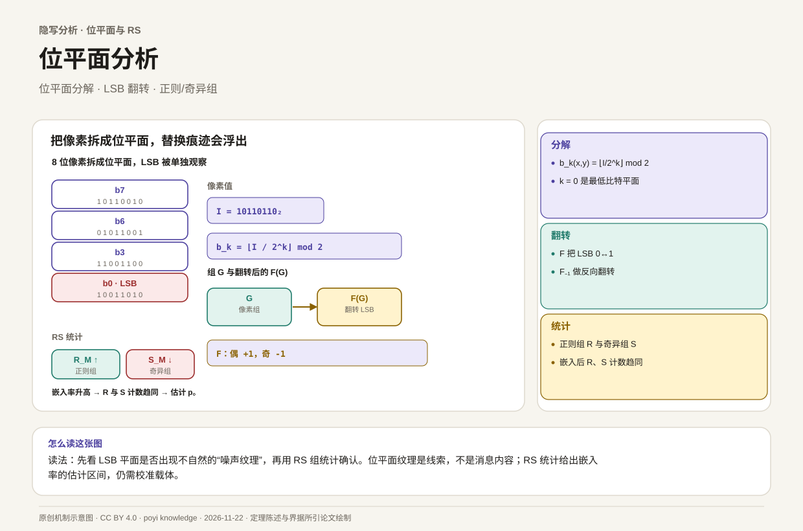
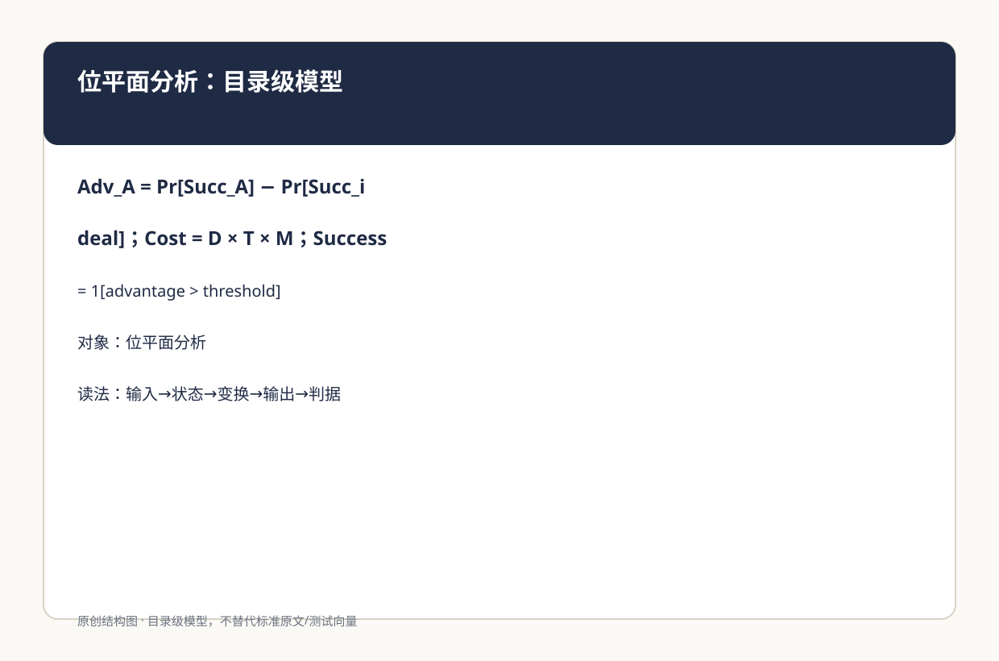

原理与机制
攻击：位平面分析（Bit-Plane Analysis）。### 位平面分解
把一幅 8 位灰度图写成像素矩阵 I(x,y)，第 k 个位平面为
b_k(x,y) = ⌊I(x,y) / 2^k⌋ mod 2。k=0 是最低比特平面（LSB），k=7 是最高比特平面。高位平面保留轮廓，低位平面看起来更接近噪声。LSB replacement 只改 k=0，因此它不会改变图像的大尺度亮度，却会改变 LSB 平面的局部相关性。### LSB 翻转函数
对像素值 x，定义 F(x) 为把最低比特翻转：偶数 x 变成 x+1，奇数 x 变成 x-1；F₋₁ 则把偶数 x 变成 x-1、奇数 x 变成 x+1。RS 分析把像素按掩膜 M 分成组 G，计算判别函数 f(F(G)) 与 f(G)。若 f(F(G)) > f(G)，组是正则的（R）；若小于，组是奇异的（S）。自然图像中 R 与 S 的计数有稳定偏差。### 嵌入率的读数
LSB replacement 会把组内像素的 LSB 推向独立随机位，使 R 与 S 的计数逐渐接近。分别对掩膜 M 与 -M 统计 R_M、S_M、R_{-M}、S_{-M}，可以用四条计数曲线估计嵌入率 p；p 接近 0 表示几乎没有替换，p 接近 1 表示 LSB 平面被大量重写。具体估计式依赖分组大小、判别函数和图像内容，不能把一个阈值当成所有图像的固定答案。

为什么重要
自然图像的 LSB 并不完全随机：传感器噪声、量化、去马赛克和压缩会让相邻像素的低位存在相关性。LSB replacement 用消息位覆盖这一层，等于把局部相关结构替换成近似独立位，位平面纹理与 RS 计数都会变化。### 与卡方分析的差别
卡方分析看相邻取值桶的直方图，位平面与 RS 分析看空间分组和翻转后的判别函数。前者对全局直方图敏感，后者对局部纹理和分组结构敏感；两者可以互补，但都主要针对朴素 LSB replacement。### 对隐写设计的含义
要抵抗位平面与 RS 检测，嵌入器不能简单地逐位替换，而要使用矩阵嵌入、湿纸编码、F5、自适应嵌入或扩频，使修改位置与修改方向接近载体分布。仅把消息加密后写入 LSB 并不等于不可检测。
应用与实例
1.记录图像格式、位深、色彩空间、压缩历史与可能的重采样。2.提取 k=0…7 的位平面，先做视觉检查；LSB 平面出现不自然的均匀噪声或块状结构时列为候选。3.选定分组大小与掩膜 M，计算 R_M、S_M、R_{-M}、S_{-M}。4.用已知载体和已知嵌入率做校准，估计 p 的区间；不要用单一图像的单一阈值下结论。5.报告写“存在 LSB replacement 的统计迹象与估计嵌入率”，不写“已提取消息”。### 工具位置
Stegdetect 等工具把 RS、卡方、位平面视觉检查组合成候选筛选；RS 负责给出嵌入率线索，卡方负责直方图异常，最终仍需人工或专用提取器验证。

边界与攻击面
1.非 LSB replacement：LSB matching、矩阵嵌入、F5、湿纸编码不保证 RS 计数按同一方式变化。2.低嵌入率：少量修改被载体噪声和压缩痕迹淹没。3.强压缩、裁剪、缩放、滤波或重采样：位平面相关结构被破坏，校准失效。4.载体本身纹理单一或经过合成：R/S 基线偏移，容易产生假阳性。5.自适应嵌入：修改集中在纹理区域，全局 RS 统计被稀释。6.调色板图像或索引图：LSB 改动可能映射到完全不同的颜色，视觉与统计假设都改变。位平面纹理是视觉线索，RS 是统计检验；两者都不能证明消息内容，也不能证明没有消息。它们给出的是“像不像 LSB replacement”的证据强度，必须与载体类型、嵌入器和校准样本一起报告。
历史与背景
Fridrich、Goljan 与 Du 在 2001 年把 LSB 隐写的检测从单纯视觉观察推进到可重复的正则/奇异组统计，并报告在随机分散嵌入下可检测到约 0.03 bpp 的消息。论文同时强调，检测的是 LSB 替换的统计痕迹，不是消息语义。### 后续发展
Dumitrescu、Wu 与 Wang 在 2003 年提出样本对分析，把相邻样本的取值关系作为统计对象，进一步发展了 LSB 隐写分析。此后的校准、特征融合与机器学习方法继续处理低嵌入率、自适应嵌入和压缩图像，但“位平面 + 分组统计”仍是取证入门的核心读法。
逐步示例与核验
形式模型与复算步骤
[\mathrm{Adv}^{\mathrm{attack}}_A(\lambda)=\Pr[\mathrm{Game}_A(\lambda)=1]-\frac12]
位平面分析的公开参数、密钥/随机数与消息；变量说明：λ 安全参数；Game 把攻击目标写成挑战-响应游戏。1.定义挑战与获胜条件。2.给攻击者 oracle 访问。3.计算优势并与目标界比较。边界：公式只覆盖已登记的参数与假设；参数取值、标准版本和实现细节仍以来源为准。
参考出处
- Wikipedia search entry for 位平面分析. https://zh.wikipedia.org/w/index.php?search=%E4%BD%8D%E5%B9%B3%E9%9D%A2%E5%88%86%E6%9E%90
- Handbook of Applied Cryptography (Menezes, van Oorschot, Vanstone). https://www.cacr.math.uwaterloo.ca/hac/